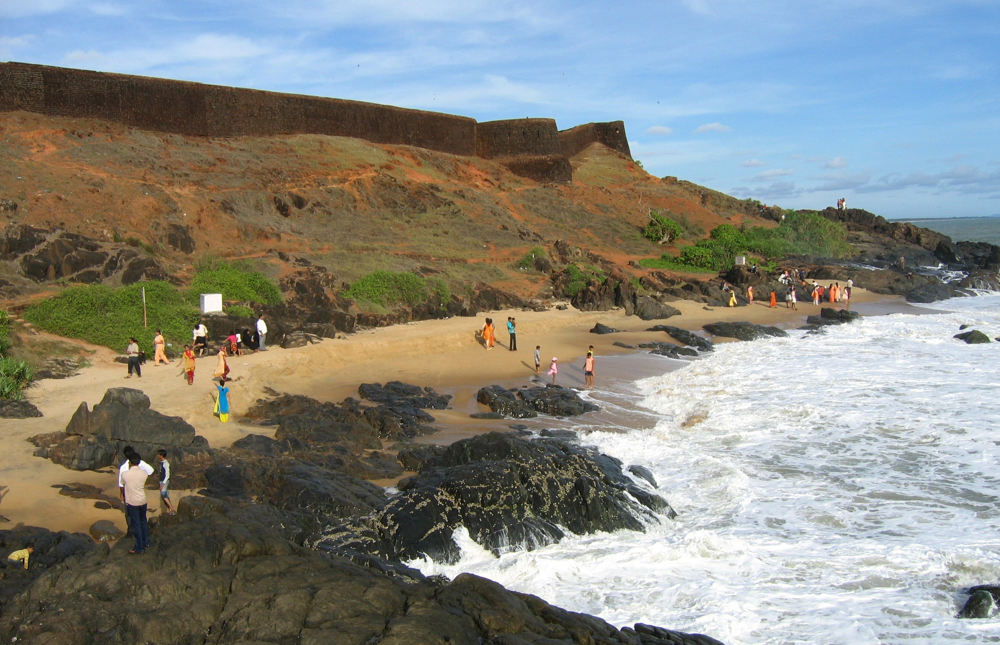

Welcome to Kasaragod
The northernmost district of Kerala, known as the “Land of Seven Languages”.
Kasaragod lies in northern Kerala, between the Western Ghats and the Arabian Sea. Its people and places reflect a remarkable blend of Malayalam, Tulu, Kannada, Beary, Konkani, Marathi, and Urdu.

Where historic landmarks meet the Arabian Sea
Culture and tradition
Temple festivals, Theyyam performances, traditional handicrafts, coastal food, and multilingual communities give Kasaragod a distinctive cultural identity.
Quick facts
- Headquarters: Kasaragod town
- Major rivers: Chandragiri, Kariangode, and Shiriya
- Known for: Bekal Fort, Theyyam, beaches, and handlooms
Explore more at Wikipedia’s Kasaragod page.